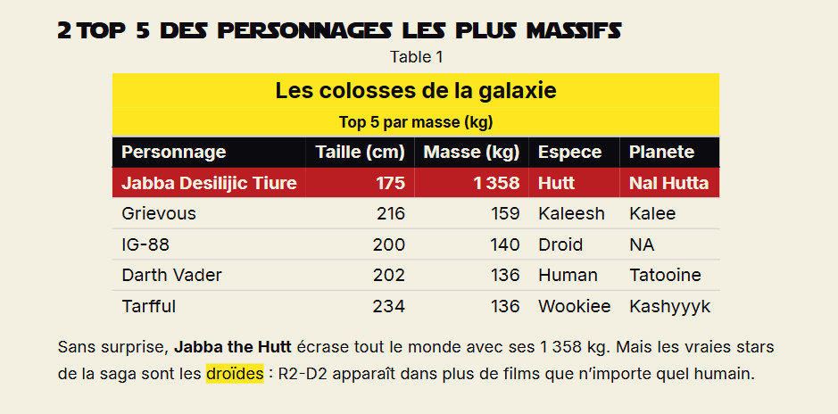

Passer du document au livre
Diapos
Points couverts
À la fin de ce bloc, vous saurez
- Régler
format: typstet_brand.ymlune seule fois pour tout le projet, dans_quarto.yml - Assembler plusieurs
.qmden un livre avectype: book(TOC, numérotation, références croisées) - Reconnaître que
format: typst+type: bookactive automatiquement l’extension orange-book (Quarto 1.9)
Le déroulé — My turn → Our turn → Your turn
- My turn — je présente à partir des diapos (ci-dessus).
- Our turn — démo live (5-6 min) : on crée un
_quarto.ymlpuis on bascule le projet en livre.- Créer
_quarto.ymlavecproject: { type: default }+format: typst→ 5 PDF séparés - Passer à
type: book+ blocbook: { title, chapters }→ PDF unique avec couverture orange-book, TOC, numérotation par chapitre
- Créer
- Your turn — à vous l’Exercice 2 ci-dessous : le reste (
appendices,_brand.ymlprojet, références croisées, pagebreak).
Exercice 2
- Boussole Exercice 2 — à suivre pendant l’exercice : les étapes en bref + le chrono, à garder ouverte en second écran.
- Cette page — le détail complet : étapes pas à pas (« Vous devriez voir »), la doc utile par étape, le modèle
_quarto.ymlet la correction.
🎯 Objectif : transformer 5 .qmd en un livre PDF Typst stylé via _quarto.yml + _brand.yml.
Fichier : exercises/02-projet-book/starter/
3 étapes principales (15 min) — attendues de tous :
| # | Action | Vous devriez voir | Doc |
|---|---|---|---|
| 1 | Créer _quarto.yml à la racine du starter : un projet (project.type: default) et format: typst (modèle complet à copier plus bas). |
5 PDF séparés (un par fichier). ⚠️ Normal à ce stade : une référence croisée non résolue ( ?@sec-origines) + un warning à la compilation — ça se résout en mode livre à l’étape 2a. |
|
| 2a | Passer à project.type: book et ajouter un bloc book: avec title, author et la liste chapters: (cf. modèle plus bas). Le format: typst reste — orange-book s’active automatiquement. |
PDF unique + couverture orange-book + Figure 1.1 / Figure 2.1 / Table 1.1 / Table 2.1 + TOC. annexe-donnees apparaît comme dernier chapitre numéroté. |
|
| 2b | Ajouter appendices: [annexe-donnees.qmd] au bloc book:. |
annexe-donnees bascule en « Annexe A » à la fin du livre, hors numérotation des chapitres. |
|
| 3 | Copier _brand.yml (+ _logo-sw.svg + _fonts/) à la racine. Si vous avez fini Bloc 1 → reprenez votre _brand.yml. Sinon → renommez _brand-starter.yml en _brand.yml. (Le charte-starwars.pdf du starter reste votre référence visuelle.) |
Couverture aux couleurs Star Wars (bande imperial-red + logo étoile jaune), titres Star Jedi, corps Inter. (Les tableaux gt restent bruts à ce stade — leur mise aux couleurs de la charte est l’objet du Bonus B4.) |
+ 2 bonus (3 min, pour les rapides) :
B2 — bloc à coller en fin de conclusion.qmd :
::: {.content-visible when-format="typst"}
{{< pagebreak >}}
:::Pour chaque étape, la page (et la section) à ouvrir — le lien de chaque ligne du tableau y mène directement. La doc Quarto/brand-yml est faite pour être consultée en cours de route :
- Étape 1 — Projets › Project Metadata
- Étape 2a — Books · book structure
- Étape 2b — book structure › appendices
- Étape 3 —
_brand.yml› Project-level brand - Bonus B1 — Cross-references › Figures & Sections
- Bonus B2 — Conditional › content-visible
- Relisez l’objectif + le « Vous devriez voir » de l’étape.
- Ouvrez le lien de l’étape (ou le bloc Doc utile par étape ci-dessus) et cherchez la section indiquée.
- Ouvrez
exercises/02-projet-book/correction/(filet final).
Mémo rapide starter
Exercice 2 — Starter
Mémo du dossier
starter/. Contenu et commande de rendu ci-dessous. Le pas-à-pas complet (étapes, indices doc, modèle_quarto.yml, « Si vous bloquez ») est sur la page de l’exercice.
Contenu du dossier
| Fichier | Rôle |
|---|---|
index.qmd |
Préface du livre (à garder) |
01-anatomie.qmd |
Chapitre 1 (à garder) |
02-origines.qmd |
Chapitre 2 (à garder) |
conclusion.qmd |
Conclusion (à garder) |
annexe-donnees.qmd |
Sera basculé en annexe à l’étape 2b |
charte-starwars.pdf |
Charte graphique Star Wars (référence visuelle pour l’étape 3) |
exercice-02.Rproj |
Projet RStudio — double-cliquez-le pour ouvrir l’exercice (répertoire de travail correct) |
(pas de _quarto.yml) |
À créer à l’étape 1 |
(pas de _brand.yml) |
À copier à l’étape 3 (ou traduire d’après la charte) |
Rendu
Une fois le _quarto.yml créé (étape 1), rendez le projet depuis ce dossier :
quarto renderRésultat après les 3 étapes : un livre PDF Typst unique, stylé.
Pas de _brand.yml du Bloc 1 ?
Ces fichiers sont fournis à la racine de l’exercice (le dossier qui contient starter/) — posés par tutoquartotypst::installer_exercices(), ou sur GitHub. Copiez-les à la racine de votre projet :
_brand-starter.yml→ renommer en_brand.yml_logo-sw.svg
{kind=link}
Bloqué ?
Cf. le bloc « Si vous bloquez » sur le site (page exo) ou la correction/ en dernier recours.
Modèle _quarto.yml pour les étapes 2a + 2b
Si vous bloquez sur la syntaxe, voici un exemple complet à adapter. À l’étape 2a, annexe-donnees.qmd est le dernier item de chapters: (dernier chapitre numéroté). À l’étape 2b, déplacez-le sous appendices: (décommentez le bloc) — il bascule alors en « Annexe A » :
_quarto.yml
project:
type: book
lang: fr # ← labels en français : « Chapitre », « Table des matières »
book:
title: "Anatomie d'une saga"
author: "Mon Mothma"
chapters:
- index.qmd
- 01-anatomie.qmd
- 02-origines.qmd
- conclusion.qmd
- annexe-donnees.qmd # ← état 2a : dernier chapitre numéroté
# appendices: # ← étape 2b : déplacez la ligne ci-dessus ICI
# - annexe-donnees.qmd # (annexe-donnees passe de chapitre à « Annexe A »)
format:
typst:
# Logo personnalisé : sans cette section, Quarto place le logo
# `_brand.yml` à 1.5in width / 0.75in padding par défaut, ce qui
# chevauche les titres dès la 2e page.
# NB : `sw-star` est défini par `_brand.yml` (étape 3) — avant, ce
# bloc est sans effet (logo absent, aucune erreur).
logo:
path: sw-star
location: left-top
width: 0.6in
padding: 0.4in
execute:
echo: false
warning: false
message: falsechapters: reçoit les fichiers numérotés normalement. appendices: (parallèle à chapters:, pas dedans) reçoit les fichiers qui sortent du flux principal — ils deviennent A, B, C… après tous les chapitres.
Rendre le projet : lancez quarto render à la racine du dossier (là où se trouve _quarto.yml), ou utilisez le bouton Render de RStudio / Positron. Quarto rend alors tout le projet d’un coup — pas besoin de cibler un fichier précis.
Sur Quarto stable 1.9.x ou pre-release 1.10.0 à 1.10.3, les polices déclarées dans _brand.yml ne sont pas passées automatiquement à Typst en mode book (titres en serif au lieu de Star Jedi, warning unknown font family: ... à la compilation). Bug corrigé par quarto-dev/quarto-cli#14517, fix livré à partir de la pre-release v1.10.4.
Si vous êtes sur une version concernée, ajoutez ce bloc dans format.typst de votre _quarto.yml :
format:
typst:
font-paths:
- .quarto/typst/fonts # cache des polices Google (Inter)
- _fonts # polices locales `source: file` (Star Jedi)Sur Quarto v1.10.4+, ce bloc est inutile (anodin mais redondant).
gt à connaître (étape 3)
Si vous voyez « 1 7 5 » au lieu de « 175 » dans les tableaux après avoir copié _brand.yml (typique sur Windows/macOS), c’est un bug connu de gt → Typst quand les polices de remplacement du tableau s’appliquent. Correction : ajoutez |> opt_table_font(font = "Inter") à la fin de votre pipeline gt. Non bloquant — vous pouvez continuer sans.
Les bonus B3 et B4 ci-dessous, c’est pour aller plus loin — à explorer après l’atelier si vous manquez de temps en séance.
La correction propose 3 variantes de _brand.yml clés en main : Empire / Sith (rouge), Jedi / R2-D2 (bleu), Mandalorien (crimson). Pour permuter sans renommer de fichier, ajoutez dans _quarto.yml :
brand: _brand-jedi.ymlTestez _brand-jedi.yml ou _brand-mando.yml pour voir un vrai changement : _brand-empire.yml est identique au _brand.yml par défaut (l’Empire est la palette de référence du livre), donc le pointer dessus ne modifie rien à l’écran.
Détails et explication du choix de couleur (pourquoi pas le jaune SW iconique en primary) dans le README de l’exercice.
_brand.yml
Le paquet R brand.yml lit votre charte depuis R et fournit les helpers read_brand_yml(), brand_color_pluck(), theme_brand_gt() et theme_brand_ggplot2(). Couplés à gt::tab_style(), ils appliquent vos couleurs Star Wars à tous les tableaux et graphiques du livre sans dupliquer aucun hex.
Le moment « waouh » : combinez ce bonus avec le Bonus B3 (changement de palette). Une seule ligne YAML modifiée fait suivre les lignes 1 des tableaux, les barres du graphique espèces, et les annotations Jabba/Yoda du nuage taille-masse — la charte pilote le PDF et toutes les sorties R depuis un seul fichier.
Étape 1 — Mise en place. Ce bonus suppose les paquets brand.yml et prismatic installés (cf. Préparatifs) — sinon library(prismatic) échoue et tout le chapitre cesse de se rendre. Dans le bloc setup-* de chaque chapitre, ajoutez :
library(brand.yml)
library(prismatic) # pour dériver des teintes crème de la charte
brand <- read_brand_yml()
pal <- function(x) brand_color_pluck(brand, x)
# Teintes crème (striping + filets) dérivées de la palette ; clr_darken renvoie
# un hex à canal alpha (#RRGGBBAA) → substr(., 1, 7) le tronque en #RRGGBB.
teinte <- function(x, f) substr(as.character(clr_darken(pal(x), f)), 1, 7)Étape 2a — Un habillage gt réutilisable. Plutôt que de répéter les mêmes tab_style() sur chaque tableau, on les regroupe dans un helper appliqué partout : police Inter (corrige le « 1 7 5 »), bandeau titre jaune, en-têtes noir/crème, striping crème et filets imperial-red — toutes les couleurs viennent de _brand.yml :
styliser_brand <- function(t) {
t |>
theme_brand_gt(brand) |>
opt_table_font(font = "Inter") |>
opt_row_striping() |>
tab_style(style = list(cell_fill(color = pal("sw_yellow")),
cell_text(weight = "bold", color = pal("foreground"))),
locations = cells_title(groups = "title")) |>
tab_style(style = list(cell_fill(color = pal("foreground")),
cell_text(color = pal("background"), weight = "bold")),
locations = cells_column_labels()) |>
tab_options(
row.striping.background_color = teinte("background", 0.06),
table_body.hlines.color = teinte("background", 0.12),
table.border.top.color = pal("primary"), table.border.top.width = px(2),
table.border.bottom.color = pal("primary"), table.border.bottom.width = px(2),
column_labels.border.bottom.color = pal("primary"), column_labels.border.bottom.width = px(2),
heading.align = "left"
)
}
# usage : votre_table |> gt() |> tab_header(...) |> cols_label(...) |> styliser_brand()Étape 2b — Faire ressortir le chiffre clé. Deux stratégies selon la donnée :
- Colonne bien répartie (comptages :
ndes mondes natals,n_filmsdes piliers) → un dégradédata_color()crème → jaune → rouge transforme la colonne en mini-heatmap (Naboo/R2-D2 ressortent) :
... |>
styliser_brand() |>
data_color(columns = n,
palette = c(pal("background"), pal("sw_yellow"), pal("primary")),
apply_to = "fill")- Valeur aberrante (masse : Jabba à 1 358 écrase tout dégradé) → un simple surlignage de la ligne 1 en imperial-red ressort mieux :
... |>
styliser_brand() |>
tab_style(style = list(cell_fill(color = pal("primary")),
cell_text(color = pal("background"), weight = "bold")),
locations = cells_body(rows = 1))Étape 3 — Graphiques ggplot2. Ajoutez theme_brand_ggplot2(brand) à la fin de chaque pipeline ggplot(). Remplacez les couleurs en dur par pal("primary") (utile pour le geom_col des espèces dans 02-origines.qmd).
Pour une légende à deux couleurs (ex. Cas remarquables / Autres dans 01-anatomie.qmd), le même principe s’applique via scale_color_manual(values = c(...)) — voir la correction.
ggplot(...) +
geom_col(fill = pal("primary")) +
... +
theme_minimal(base_size = 11) +
theme_brand_ggplot2(brand)Vous devriez voir : bandeau titre jaune SW + en-têtes noir/crème + striping crème + filets imperial-red dans tous les tableaux ; le chiffre clé en dégradé (mondes natals, films) ou en ligne-1 rouge (masses) ; et fond crème + axes noirs sur les graphiques.

brand.yml normalise les clés palette tiret-séparé en tiret_souligné à la lecture. Donc dans votre code R : pal("sw_yellow") (pas pal("sw-yellow")). Si vous vous trompez de clé, brand_color_pluck() ne lève pas d’erreur lui-même : il renvoie la chaîne d’entrée telle quelle ("sw-yellow"). Cette valeur, n’étant pas une couleur valide, fait ensuite planter le rendu au niveau de cell_fill() / data_color() — un message d’erreur Typst peu parlant. Le réflexe : vérifier d’abord vos clés palette (underscore, pas tiret).